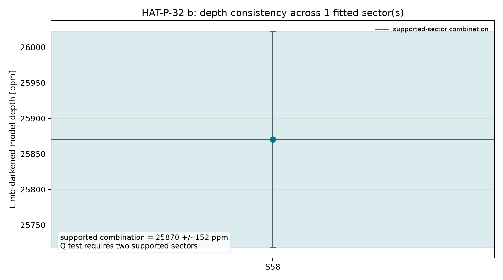
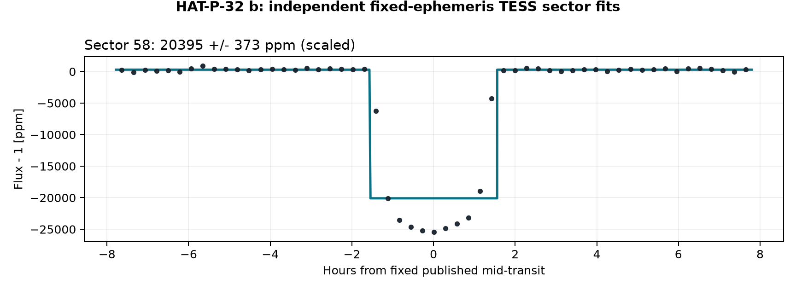

Data source notes
SHA-256, LF-normalised text
fd8794649ef5951550340f59596b36b7ffb7cc165434e3279530159158ac75dcBrowse 9 versioned evidence files. Table previews simply display stored rows. Consult the project report for the source, processing steps, and inference assumptions.


fd8794649ef5951550340f59596b36b7ffb7cc165434e3279530159158ac75dc| pl_name | hostname | ra | dec | pl_orbper | pl_tranmid | pl_trandur |
|---|---|---|---|---|---|---|
| HAT-P-32 b | HAT-P-32 | 31.0427614 | 46.6878512 | 2.1500082 | 2455867.402743 | 3.12048 |
a75bb8928145fbd2c268abac2ffefad5b58aac4e6649331fb58a6310e0cc8529808d5c6fa9608095cc7638e91424fefac5232af2c2b0df3ee5b4766c6f5ebc69| quantity | value | unit |
|---|---|---|
| sector | 58 | TESS sector |
| period_days | 2.1500082 | days; NASA Exoplanet Archive |
| published_duration_hours | 3.12048 | hours; NASA Exoplanet Archive |
| a_over_rstar | 5.34355306511 | fixed from saved a and stellar radius |
5c64e722dbdfecb2bed78779f4cf7e9314657a3553dc41fe8d81a36ea1f3c770| sector | filename | transit_events | n_points | transit_supported | delta_bic | timing_shift_hours |
|---|---|---|---|---|---|---|
| 58 | tess2022302161335-s0058-0000000292152376-0247-s_lc.fits | 13 | 6993 | True | 194575.8398 | -0.009487891052 |
1f3443e7aa052f0c0149bf0abfe26e368f50b2c1501d79cf67e2e9f31f476e0714d0cccc4b4fa227793adc32a7da9bd4b2d3326d86d1c2819833adae8bb3b3aa7ab31d2947e51e14fec94175bc51690643b7e61dce6a3b6a01c9e5c4f2a77d2efa18878ccdd967b735571efa39934b326e90d6ae71ae33e5c12e25c1b5bbf2d2fafc6c5737dea7699dbb29f79cfab1449aebf2c958a43e148f85aae7ed7bd383SHA-256 values verify the stored files. They do not independently validate the scientific analysis. Rebuild this page with python scripts/evidence_catalog.py followed by python scripts/render_evidence_page.py.